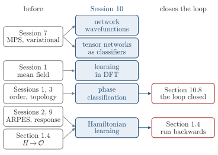

Advanced Quantum Materials 2027 · All lectures · Lecture notes
Session 10. Machine Learning Quantum Materials
Video lecture · Landscape lecture · session10.ipynb · PDF of the notes
At the end of Session 9 we used linear response as a diagnostic tool, and we applied it to almost every class of system of the course. In this session we need several of the tools that we built before. The first is the forward arrow of Section 1.4, from a Hamiltonian to its observables. The second is the variational principle and the matrix product states of Section 7.4 and Section 7.10, together with the PEPS of Section 7.11. We also use the mean-field decoupling of Section 1.12, and the two ways of telling phases apart. These are a local order parameter, as for the spontaneous symmetry breaking of Section 1.11, and a topological invariant, as for the Chern number of Section 3.5.
In this session we ask what happens when machine learning meets the many-body physics of the course, in both directions. In some cases a machine-learning architecture is the right tool for a hard many-body problem. In other cases a many-body technique that we already know is the right architecture for a machine-learning problem. First we build neural network quantum states, where a network takes the place of the exponentially many coefficients of a wavefunction and is trained with the variational energy as the loss. The same network then reconstructs a state from a small number of measurements. Then we use tensor networks as classifiers of images, and we see how machine learning enters density functional theory. After that we classify phases with a network, first for the Ising model and then for the Ising gauge theory, which has no local order parameter. At the end we see Hamiltonian learning, which runs the forward arrow of Section 1.4 backwards and infers a Hamiltonian from measured observables. There is no companion notebook for this session, so the derivations on these pages are complete and there are no try-it boxes.
